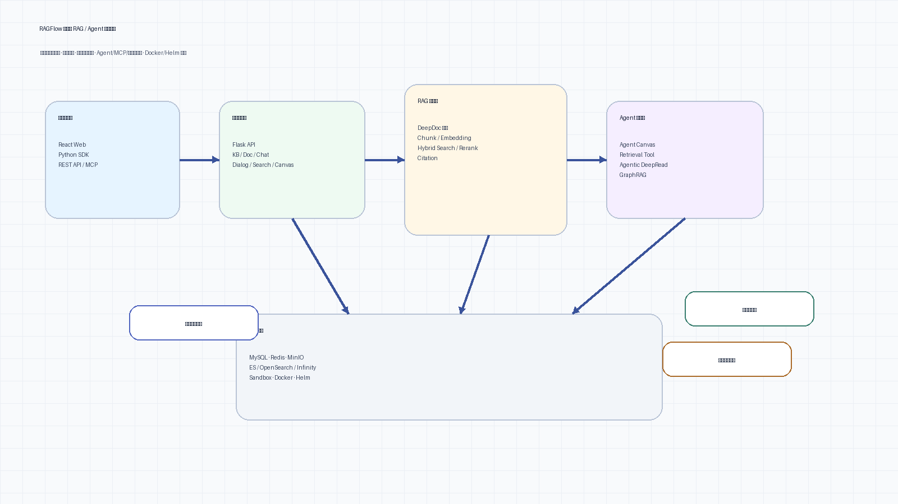
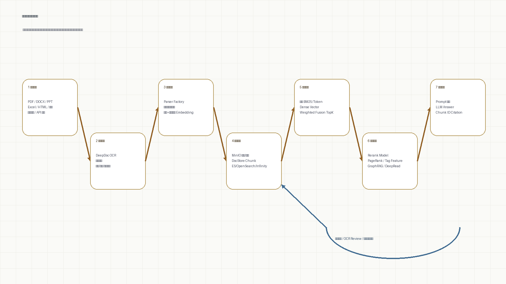

flowchart TB web["Web Console<br/>知识库 / 搜索 / Chat / Agent / 文件管理"] api["API Server<br/>Flask app / tenant / document / runtime config"] worker["Task Executor<br/>parse / chunk / embedding / graph index"] retrieval["Retrieval Service<br/>full-text / dense / fusion / rerank / citation"] agent["Agent Layer<br/>retrieval tool / DeepRead / GraphRAG / MCP"] store["Storage Layer<br/>object store / SQL metadata / Redis queue / doc index"] web --> api api --> store api --> retrieval api --> agent store --> worker worker --> store retrieval --> store agent --> retrieval
RAGFlow 项目报告
RAGFlow 深度文档理解与 Agentic RAG 平台项目总结。
Project Report
RAGFlow
面向复杂企业知识库的 RAG 平台重构总结：从“把文档切块后检索”推进到“结构化解析、异步索引、混合召回、证据引用、Agent 深读和工具生态”的系统闭环。
Core
RAG 平台
围绕知识库、文档、检索、聊天、搜索、Agent 和工作流形成产品闭环。
Parsing
DeepDoc
面向 PDF、Office、网页、表格等非结构化文档做版面解析与模板化切分。
Retrieval
Hybrid
词法召回、向量召回、融合排序、重排、聚合与高亮引用一起工作。
Extension
Agent
检索工具、GraphRAG、DeepRead、MCP 和沙箱执行把问答扩展成可编排智能体。
00 项目概览
问题背景
企业知识库文档类型混杂、版面复杂、更新频繁；如果只做普通 chunk + embedding，容易出现表格丢结构、页码丢引用、长链推理断裂和无法复盘的问题。
系统解法
用 DeepDoc 做结构化解析，用任务队列和索引 worker 承接长耗时处理，用 hybrid retrieval 和 rerank 稳定召回，再把证据链交给 Chat、Search、Agent 和 MCP。
项目价值
这个项目适合体现系统级 RAG 工程能力：既有算法侧检索、重排、GraphRAG 和 Agentic DeepRead，也有工程侧异步任务、存储、前端工作台和工具服务化。
技术主线
我会把 RAGFlow 的叙事重点放在“闭环”上：文档进入系统后，经过解析、索引、检索、引用、回答、反馈和工具扩展，每一步都能回到可诊断的状态。
| 阶段 | 技术选择 | 关键卡点 | 处理逻辑 |
|---|---|---|---|
| 文档接入 | DeepDoc + parser factory | PDF、表格、图片、网页等格式结构差异大 | 按 parser 类型拆分解析器，保留章节、表格、图片与页码等证据信息 |
| 索引构建 | Redis queue + task executor | 解析、切块、embedding、入库耗时长且容易失败 | 异步 worker、信号量和进度更新把长任务拆成可追踪步骤 |
| 召回排序 | Full-text + Dense Vector + Fusion | 纯向量易漂移，纯关键词召回覆盖不足 | 词法和向量混合召回，再用权重融合、重排、聚合和高亮构造证据集 |
| 复杂推理 | GraphRAG + Agentic DeepRead | 多跳问题需要跨段落、跨实体、跨文档组合证据 | 图谱实体关系、候选文档深读、工具调用式证据选择共同补足普通 RAG |
| 生态扩展 | MCP + Sandbox | RAG 能力需要被外部 Agent 安全调用 | 用 MCP 暴露检索接口，用沙箱隔离代码执行，避免工具链失控 |
01 系统架构
总体架构图

服务启动
api/ragflow_server.py 负责初始化日志、配置、数据库、运行时环境、插件和进度更新线程，体现的是平台服务而不是单脚本 demo。
后台任务
rag/svr/task_executor.py 连接解析器、队列、embedding、对象存储和 GraphRAG，是文档从上传到可检索的核心调度层。
前端工作台
web/ 使用 Umi + React + Ant Design，覆盖知识库、聊天、搜索、Agent、文件管理、模型配置和流程页面。
02 索引流水线
文档进入到可检索
flowchart LR upload["上传/同步文档"] --> parse["DeepDoc 解析<br/>版面 / 表格 / 图片 / 章节"] parse --> chunk["模板化切块<br/>parser-specific chunking"] chunk --> embed["Embedding<br/>批量向量化"] chunk --> kgindex["GraphRAG<br/>实体 / 关系 / community"] embed --> index["文档索引<br/>文本字段 + 向量字段 + 元数据"] kgindex --> index index --> ready["可检索知识库<br/>progress / status / citation"]

为什么用异步任务
文档解析、OCR、embedding 和图谱抽取都可能是分钟级任务；如果直接阻塞 API，请求会超时且无法恢复。RAGFlow 把长任务放到 worker 和队列里，并通过进度更新让前端展示状态。
为什么保留结构信息
企业问答需要回答“依据在哪一页、哪一段、哪张表”。解析阶段如果丢掉页码、标题层级和表格关系，后面的 citation 再漂亮也只是表面可信。
03 检索与引用
RAGFlow 的检索链路不是单一向量搜索。rag/nlp/search.py 中可以看到关键词查询、dense vector、weighted fusion、fallback、聚合、高亮和引用插入这些步骤被放在同一个 Dealer 流程里。
Query问题分析
Lexical关键词召回
Dense向量召回
Fusion融合排序
Rerank相关性重排
Citation高亮与引用
召回覆盖
关键词召回适合精确实体和术语，向量召回适合语义改写和长句问题；二者融合可以降低任一单路失效的风险。
排序稳定
相似度阈值、向量权重、top-k、rerank 和 fallback 共同控制质量，避免“召回很多但证据不准”。
可追溯回答
高亮、doc aggs、chunk positions 和 citation insertion 让回答能回到原文证据，而不是只给一个无法验证的总结。
04 Agentic RAG
从一次检索到多步深读
flowchart TB
question["用户复杂问题"] --> mode{"Retrieval Mode"}
mode --> naive["naive retrieval<br/>普通知识库召回"]
mode --> kgretrieval["graph retrieval<br/>实体/关系/多跳"]
mode --> deepread["agentic_deepread<br/>候选文档 → 目录概览 → 工具式证据选择"]
naive --> evidence["证据集"]
kgretrieval --> evidence
deepread --> evidence
evidence --> answer["带引用回答 / Agent 下一步动作"]
Retrieval Tool
agent/tools/retrieval.py 把检索封装成 Agent 工具，并提供 naive、graph、agentic_deepread 等模式选择。这样 Agent 不需要知道底层索引细节，只需要按任务选择检索策略。
DeepRead Researcher
agentic_reasoning/deepread_researcher.py 先粗召回候选文档，再加载结构化 corpus，最后通过工具调用式过程选择 evidence。它解决的是“需要读文档结构才能回答”的问题。
GraphRAG
graphrag/general/index.py 和 graphrag/search.py 把实体、关系、PageRank、community report 和多跳路径放进检索链路，适合回答跨实体、跨段落的问题。
闭环视角
普通 RAG 负责快召回，DeepRead 负责结构化深读，GraphRAG 负责关系推理；三者不是互斥方案，而是按问题复杂度逐层加算力。
05 工程扩展
MCP 服务化
mcp/server/server.py 把 RAGFlow 的 dataset list、retrieval 等能力包装成外部工具接口，使知识库检索可以被 Claude、Cursor 或自建 Agent 调用。
沙箱执行
sandbox/executor_manager/services/execution.py 通过容器池执行 Python/Node 代码，设置超时、内存和错误分类，适合 Agent 执行计算类工具但不直接污染宿主环境。
前端可挂载
这次已经把 web/ 构建成静态 Umi 版本，挂在个人站 demos/ragflow/。由于没有启动 RAGFlow 后端，登录和 API 数据会受限，但页面结构、路由和产品形态可以直接展示。
06 风险卡点
| 风险 | 为什么难 | 包装成项目能力 |
|---|---|---|
| 文档解析不稳定 | 扫描件、复杂表格、多栏 PDF、页眉页脚会污染 chunk | 强调 DeepDoc、模板化 chunk、结构字段保留和解析失败回退 |
| 检索质量难复现 | 召回、重排、prompt 和模型版本都会影响最终回答 | 把 similarity、vector weight、top-k、rerank、引用命中率纳入评测维度 |
| 长任务不可观察 | 解析和 embedding 失败时用户只看到“卡住” | 使用队列、进度线程、状态字段和日志，把失败定位到 parse/chunk/embed/index |
| Agent 工具失控 | 工具调用可能循环、越权、执行不可信代码 | 用工具模式、MCP 授权、沙箱容器、超时和错误分类控制边界 |
| 前端静态展示受限 | 真实知识库、登录态和检索依赖后端服务 | 个人站挂静态前端展示信息架构，真实演示再接 API Server 和 worker |
07 Demo
Vendeflow 前端 Demo
构建自 /Users/liujunyan/vende/ragflow-main/web，已改成个人站子路径可加载的静态资源，并拆掉静态展示里的登录门。当前未启动 api/ragflow_server.py，所以真实知识库、检索和写入类接口不会返回业务数据。
推荐演示方式
页面上重点展示 RAGFlow 的产品复杂度：知识库、搜索、Chat、Agent、文件管理、模型配置和工作流。项目报告页负责解释背后的工程闭环和算法链路。